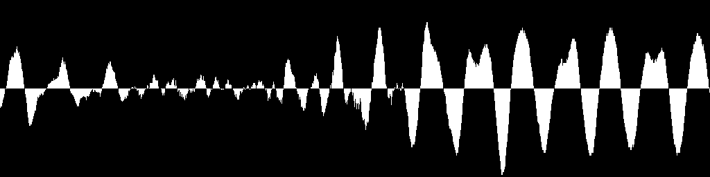
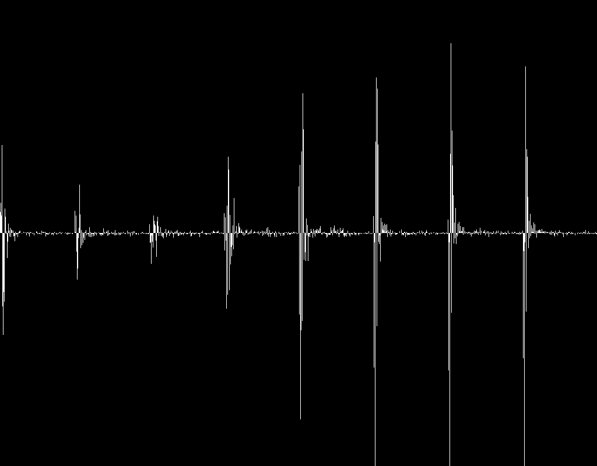
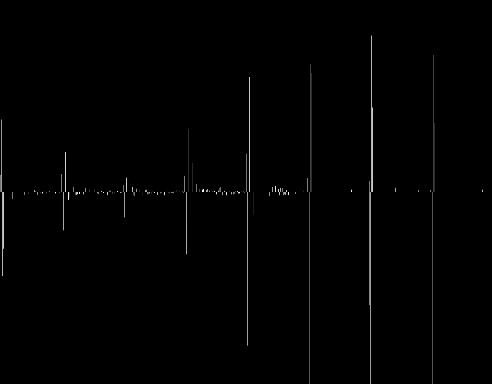
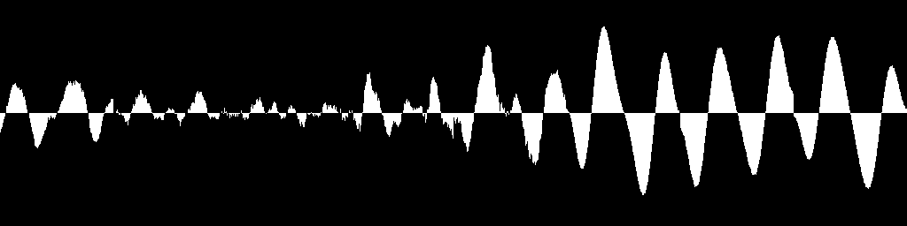

Le son après DCT :

Le son après DCT et PSYCHO :

Compression d'image : dct | psycho | rle
Décompression : rleinv | dctinv
Pour vérification le son original et le son restitué
avec une qualité de 1.

Taille du son original : 103424 octets, taille du son comprimé : 36769 octets. Vous pouvez écouter le son. Si le lien ne fonctionne pas, tapez ./joue xxx.au
Si l'on utilise shannon fano dynamique la taille est de 35733 octets.